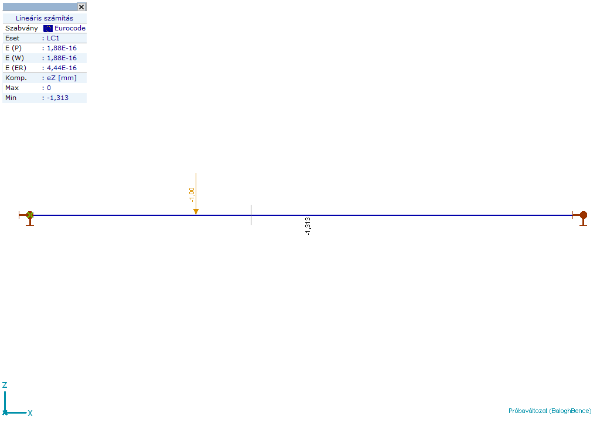

This page was generated from
docs\source\notebooks/_concrete_beam_design.ipynb.
Design example of a concrete beam. Define geometry, loads, material, calculate, get results.#
Launch AxisVM#
[1]:
from axisvm.com.client import start_AxisVM
axisvm_application = start_AxisVM(visible=True, daemon=True, join=True)
[2]:
import axisvm.com.tlb as axtlb
Create a new model#
[3]:
axisvm_model_id = axisvm_application.Models.New()
axisvm_model = axisvm_application.Models.Item[axisvm_model_id]
Create a material#
[4]:
axisvm_model.Settings.NationalDesignCode = axtlb.ndcEuroCode
concrete_material_id = axisvm_model.Materials.AddFromCatalog(axtlb.ndcEuroCode, "C16/20")
assert concrete_material_id > 0, f"Call to 'Materials.AddFromCatalog' failed with exit code {concrete_material_id}"
Create a cross section#
[5]:
section_id = axisvm_model.CrossSections.AddRectangular(
"section", 0.1, 0.15, axtlb.cspOther
)
assert section_id > 0, f"Call to 'CrossSections.AddRectangular' failed with exit code {section_id}"
Create the geometry#
Define the nodes
[6]:
node_id_1 = axisvm_model.Nodes.AddWithDOF(0, 0, 0, axtlb.dofFrameXZ)
assert node_id_1 > 0, f"Call to 'Nodes.AddWithDOF' failed with exit code {node_id_1}"
node_id_2 = axisvm_model.Nodes.AddWithDOF(4, 0, 0, axtlb.dofFrameXZ)
assert node_id_2 > 0, f"Call to 'Nodes.AddWithDOF' failed with exit code {node_id_2}"
Define the line of the beam
[7]:
line_id = axisvm_model.Lines.Add(node_id_1, node_id_2, axtlb.lgtStraightLine)[-1]
assert line_id > 0, f"Call to 'Lines.Add' failed with exit code {line_id}"
Create the concrete member#
[8]:
member_id = axisvm_model.Members.Add([line_id])
assert member_id > 0, f"Call to 'Members.Add' failed with exit code {member_id}"
[9]:
member = axisvm_model.Members.Item[member_id]
[10]:
beam_id = member.DefineAsBeam(concrete_material_id, section_id, section_id)[-1]
assert beam_id > 0, f"Call to 'DefineAsBeam' failed with exit code {beam_id}"
Define the supports#
[11]:
springleft = axtlb.RStiffnesses(x=1e12, y=1e12, z=1e12, xx=0, yy=0, zz=0)
springright = axtlb.RStiffnesses(x=1e12, y=1e12, z=1e12, xx=0, yy=0, zz=0)
RNonLinearity = axtlb.RNonLinearity(
x=axtlb.lnlTensionAndCompression,
y=axtlb.lnlTensionAndCompression,
z=axtlb.lnlTensionAndCompression,
xx=axtlb.lnlTensionAndCompression,
yy=axtlb.lnlTensionAndCompression,
zz=axtlb.lnlTensionAndCompression,
)
RResistances = axtlb.RResistances(x=0, y=0, z=0, xx=0, yy=0, zz=0)
retval = axisvm_model.NodalSupports.AddNodalGlobal(
springleft, RNonLinearity, RResistances, node_id_1
)[-1]
assert retval > 0, f"Call to 'NodalSupports.AddNodalGlobal' failed with exit code {retval}"
retval = axisvm_model.NodalSupports.AddNodalGlobal(
springright, RNonLinearity, RResistances, node_id_2
)[-1]
assert retval > 0, f"Call to 'NodalSupports.AddNodalGlobal' failed with exit code {retval}"
Define loads#
Permanent load group#
[12]:
group_id = axisvm_model.LoadGroups.Add(
"Permanent", axtlb.lgtPermanent, True, axtlb.gctAdditive
)
assert group_id > 0, f"Call to 'LoadGroups.Add' failed with exit code {group_id}"
[13]:
load_case_id = axisvm_model.LoadCases.AddWithGroup("G", axtlb.lctStandard, group_id)
assert load_case_id > 0, f"Call to 'LoadCases.AddWithGroup' failed with exit code {load_case_id}"
[14]:
retval = axisvm_model.Loads.AddBeamSelfWeight(line_id, load_case_id)
assert retval > 0, f"Call to 'Loads.AddBeamSelfWeight' failed with exit code {retval}"
Incidental load group 1#
[15]:
group_id = axisvm_model.LoadGroups.Add(
"Incidental 1", axtlb.lgtIncidental, True, axtlb.gctExclusive
)
assert group_id > 0, f"Call to 'LoadGroups.Add' failed with exit code {group_id}"
[16]:
load_case_id = axisvm_model.LoadCases.AddWithGroup("LC1", axtlb.lctStandard, group_id)
load = axtlb.RLoadBeamConcentrated(
LoadCaseId=load_case_id,
LineId=line_id,
Fgz=-1.0,
Position=-0.3,
SystemGLR=axtlb.sysGlobal,
)
retval = axisvm_model.Loads.AddBeamConcentrated(load)[-1]
assert retval > 0, f"Call to 'Loads.AddBeamConcentrated' failed with exit code {retval}"
[17]:
load_case_id = axisvm_model.LoadCases.AddWithGroup("LC2", axtlb.lctStandard, group_id)
load = axtlb.RLoadBeamConcentrated(
LoadCaseId=load_case_id,
LineId=line_id,
Fgz=-10.0,
Position=-0.6,
SystemGLR=axtlb.sysGlobal,
)
retval = axisvm_model.Loads.AddBeamConcentrated(load)[-1]
assert retval > 0, f"Call to 'Loads.AddBeamDistributed' failed with exit code {retval}"
Incidental load group 2#
[18]:
group_id = axisvm_model.LoadGroups.Add(
"Incidental 2", axtlb.lgtIncidental, True, axtlb.gctExclusive
)
assert group_id > 0, f"Call to 'LoadGroups.Add' failed with exit code {group_id}"
[19]:
load_case_id = axisvm_model.LoadCases.AddWithGroup("LC3", axtlb.lctStandard, group_id)
load = axtlb.RLoadBeamDistributed(
LoadCaseId=load_case_id,
LineId=line_id,
qz1=-1.0,
qz2=-1.0,
Position1=0,
Position2=-0.5,
SystemGLR=axtlb.sysGlobal,
)
retval = axisvm_model.Loads.AddBeamDistributed(load)[-1]
assert retval > 0, f"Call to 'Loads.AddBeamDistributed' failed with exit code {retval}"
[20]:
load_case_id = axisvm_model.LoadCases.AddWithGroup("LC4", axtlb.lctStandard, group_id)
load = axtlb.RLoadBeamDistributed(
LoadCaseId=load_case_id,
LineId=line_id,
qz1=-1.0,
qz2=-1.0,
Position1=-0.5,
Position2=-1.0,
SystemGLR=axtlb.sysGlobal,
)
retval = axisvm_model.Loads.AddBeamDistributed(load)[-1]
assert retval > 0, f"Call to 'Loads.AddBeamDistributed' failed with exit code {retval}"
Save the model#
[21]:
file_path = 'model.axs'
retval = axisvm_model.SaveToFile(file_path, False)
assert retval > 0, f"Call to 'AxisVMModel.SaveToFile' failed with exit code {retval}"
Linear analysis#
[22]:
retval = axisvm_model.Calculation.LinearAnalysis(axtlb.cuiNoUserInteractionWithAutoCorrectNoShow)
assert retval > 0, f"Call to 'Calculation.LinearAnalysis' failed with exit code {retval}"
Take a screenshot#
[23]:
axisvm_model.View = axtlb.vFront
axisvm_model.FitInView()
# turn off the grid
GridOptions = axtlb.RGridOptions(DisplayGrid=False)
axisvm_model.Settings.SetGridOptions(GridOptions)
WriteValuesTo = axtlb.RWriteValuesTo(
Nodes=True,
Lines=True,
MinMaxOnly=True
)
BasicDispParams = axtlb.RBasicDisplayParameters_V153(
ResultComponent=axtlb.rc_d_eZ,
Scale=1.0,
DisplayMode=axtlb.dmDiagramFilled,
DisplayShape=axtlb.dsUndeformed,
WriteValuesTo=WriteValuesTo
)
ExtDispParams = axtlb.RExtendedDisplayParameters_V153(
BasicDispParams=BasicDispParams,
DisplayAnalysisType=axtlb.datLinear,
ResultType=axtlb.rtLoadCase
)
load_case_id = 3
axisvm_model.Windows.SetStaticDisplayParameters_V153(1, ExtDispParams, load_case_id, [])
axisvm_model.Windows.ReDraw()
axisvm_application.BringToFront()
axisvm_model.Windows[1].screenshot()
[23]:

[24]:
design_parameters = axtlb.RPartialRCBeamDesignParameters(
RRCBeamCrossSections = axtlb.RRCBeamCrossSections(
StartSection = axtlb.RRCBeamSection(
bw = 0.2,
h = 0.4,
hf = 0.1,
beff = 0.4
),
EndSection = axtlb.RRCBeamSection(
bw = 0.2,
h = 0.4,
hf = 0.1,
beff = 0.4
)
),
RRCBeamSupports = axtlb.RRCBeamSupports(
StartSupport = axtlb.RRCBeamSupport(
OverWrite = False,
ActualHalfWidth = 0.1,
TheoreticalHalfWidth = 0.05,
ShearReduction = False
),
EndSupport = axtlb.RRCBeamSupport(
OverWrite = False,
ActualHalfWidth = 0.1,
TheoreticalHalfWidth = 0.05,
ShearReduction = False
)
)
)
retval = axisvm_model.RCBeamDesign.AddMembers([member_id], [design_parameters])
assert retval > 0, f"Call to 'RCBeamDesign.AddMembers' failed with exit code {retval}"
---------------------------------------------------------------------------
AssertionError Traceback (most recent call last)
Cell In[24], line 33
1 design_parameters = axtlb.RPartialRCBeamDesignParameters(
2 RRCBeamCrossSections = axtlb.RRCBeamCrossSections(
3 StartSection = axtlb.RRCBeamSection(
(...)
29 )
30 )
32 retval = axisvm_model.RCBeamDesign.AddMembers([member_id], [design_parameters])
---> 33 assert retval > 0, f"Call to 'RCBeamDesign.AddMembers' failed with exit code {retval}"
AssertionError: Call to 'RCBeamDesign.AddMembers' failed with exit code -100010
[ ]:
"""(
old_beam_design_parameters, # an instance of RRCBeamDesignParameters
old_design_code_parameters, # an instance of RRCBeamDesignParameters_EC
) = axisvm_model.RCBeamDesign.GetDesignParameters(
record_type=axtlb.RRCBeamDesignParameters_EC
)
old_beam_design_parameters.Dmax, old_design_code_parameters.TopSurface"""
'(\n old_beam_design_parameters, # an instance of RRCBeamDesignParameters\n old_design_code_parameters, # an instance of RRCBeamDesignParameters_EC\n) = axisvm_model.RCBeamDesign.GetDesignParameters(\n record_type=axtlb.RRCBeamDesignParameters_EC\n)\n\nold_beam_design_parameters.Dmax, old_design_code_parameters.TopSurface'
[ ]:
"""axisvm_model.RCBeamDesign.GetDesignParameters(
record_type=axtlb.RRCBeamDesignParameters_EC
)[0].Dmax"""
'axisvm_model.RCBeamDesign.GetDesignParameters(\n record_type=axtlb.RRCBeamDesignParameters_EC\n)[0].Dmax'
[ ]:
rebar_steel_index = axisvm_model.RebarSteelGrades.AddFromCatalog(
axtlb.ndcEuroCode, "B500A"
)
beam_design_parameters = axtlb.RRCBeamDesignParameters(
ConcreteMaterial=concrete_material_id,
Dmax=0.016,
RebarMaterial=rebar_steel_index,
StirrupMaterial=rebar_steel_index,
StirrupDiameter=0.008,
StirrupLegs=2,
Shape=axtlb.rcbsRectangle,
c_bottom=0.015,
c_top=0.015,
ds_bottom=0.0016,
ds_top=0.016,
TakeConcTensileStrengthNL=False,
UsefctmflNL=False,
ShrinkageEpsNL=0.0,
)
design_code_parameters = axtlb.RRCBeamDesignParameters_EC(
VariableAngleTrussMethod=True,
Theta=22,
fse=1.0,
ApplyMinimumCover=False,
CrackWidthCheck=False,
MaxCrackWidth_Bottom=0.0003, # in metres
MaxCrackWidth_Top=0.0003, # in metres
TakeConcTensileStrength=False,
ShortTerm=False,
Deflection_Beam_L_div=300.0,
Deflection_Cantilever_L_div=400.0,
TopSurface=axtlb.ecClassX0,
BottomSurface=axtlb.ecClassX0,
StructClass=axtlb.scS1,
SeismicZone=axtlb.rcbsecSeismicH,
PlasticHinges=axtlb.RRCBeamPlasticHinges(
EnablePlasticHinges=False,
),
)
axisvm_model.RCBeamDesign.SetDesignParameters(
beam_design_parameters, design_code_parameters
)
1
[ ]:
axisvm_model.RCBeamDesign.GetDesignParameters(
record_type=axtlb.RRCBeamDesignParameters_EC
)[0].Dmax
0.0
The parameter ‘Creep’ is missing from the documentation.
[ ]:
axisvm_model.RCBeamDesign.Calculate(
axtlb.rtLoadCombination,
1,
1,
axtlb.atLinearStatic,
False
)
(0, (), (), (), (), (), (), (), (), (), (), (), (), (), -100006)
[ ]:
#axisvm_application.Quit()